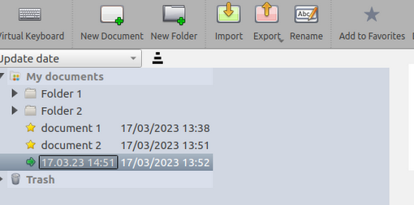

Dodavanje OpenBoard dokumenata u favorite
OpenBoard verzija 1.7 omogućuje dodavanje OpenBoard dokumenata u favorite!
Idi u modus dokumenata, odaberi jedan dokument i pritisni na u alatnoj traci dokumenata.
u alatnoj traci dokumenata.

Brzo prebacivanje s jednog dokumenta na drugi
Omiljeni dokumenti će se pojaviti u OpenBoard biblioteci pod 
Svaki OpenBoard dokument ( ) se može povući i ispustiti na ploču!
) se može povući i ispustiti na ploču!

 Koristi traku za pretraživanje na dnu OpenBoard biblioteke za brzo pronalaženje dokumenta na osnovi imena
Koristi traku za pretraživanje na dnu OpenBoard biblioteke za brzo pronalaženje dokumenta na osnovi imena
Nedavno otvoreni dokumenti
Svaki dokument koji se otvori privremeno se dodaje u favorite za brzo prebacivanje između dokumenata, bez da moraju biti izričito označeni kao favoriti.
 Ako nedavno otvoreni dokument želiš trajno dodati u favorite, to možeš obaviti putem OpenBoard biblioteke: odaberi ga i pritisni na
Ako nedavno otvoreni dokument želiš trajno dodati u favorite, to možeš obaviti putem OpenBoard biblioteke: odaberi ga i pritisni na